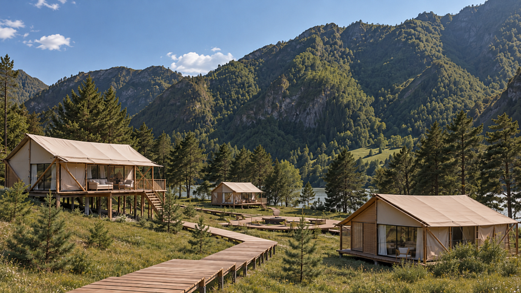
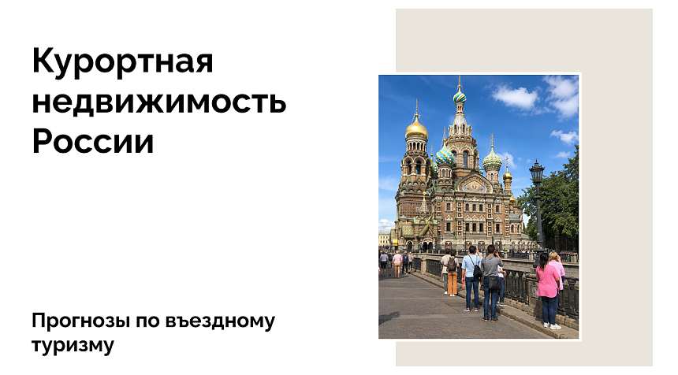
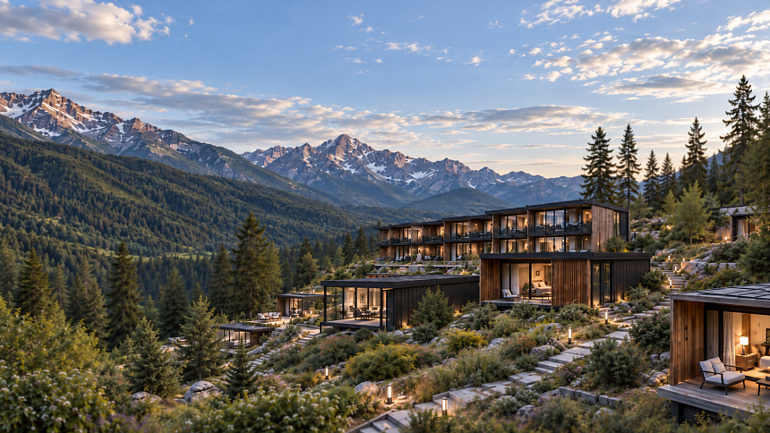

Forbes обновил мировой рейтинг городов по числу миллиардеров: Москва опустилась на третье место
Читать подробнееМедиа BARN Estate
Наши новости

Инвестиции в туризм Алтайского края выросли в полтора раза за год
Читать подробнее
Москва вошла в топ-5 городов мира по ценам на элитное жилье
Читать подробнее
Состоятельные покупатели стимулируют рынок брендовой недвижимости в Дубае
Читать подробнее
Стоимость недвижимости делюкс-сегмента выросла в третьем квартале 2024
Читать подробнее
Опубликован рейтинг городов по уровню ресторанного обслуживания
Читать подробнее
Нулевой НДС для гостиниц продлен до 2030 года
Читать подробнееЧто происходит с въездным туризмом в России: итоги 2025 года и планы на 2026
Читать подробнее
Въездной туризм этим летом мог вырасти на 25%, но помешали отмены рейсов
Читать подробнее
2,7 млн туристов выбрали модульные средства размещения в 2025 году
Читать подробнее